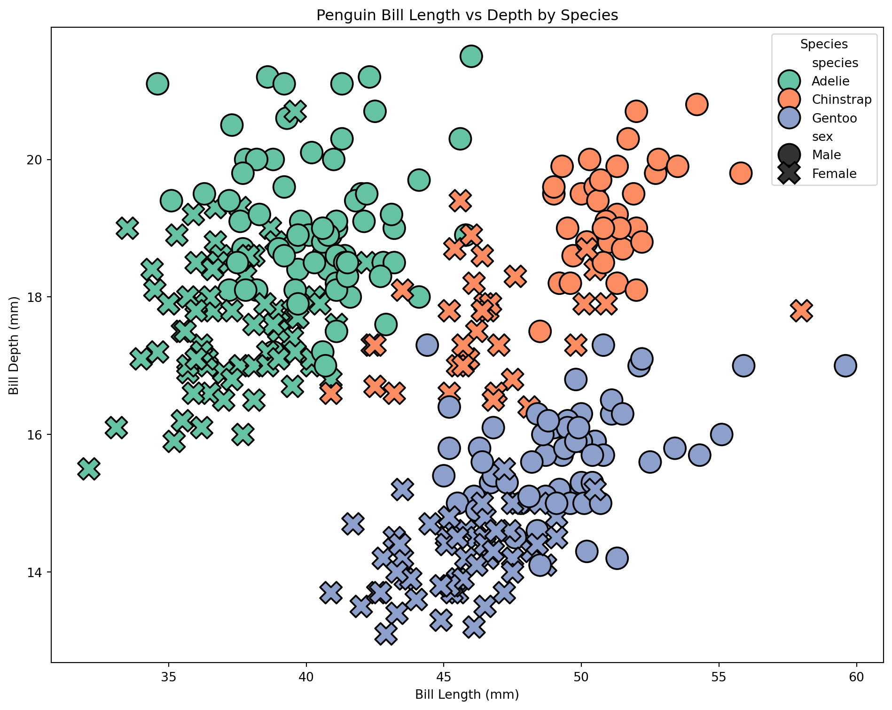
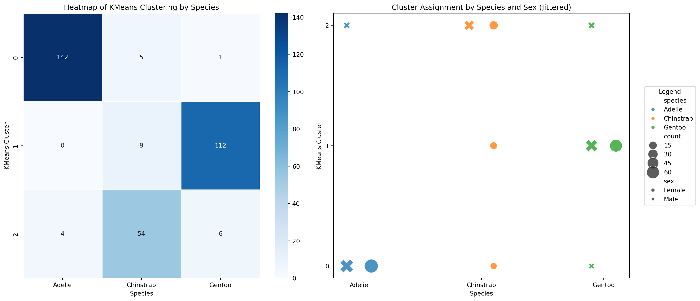
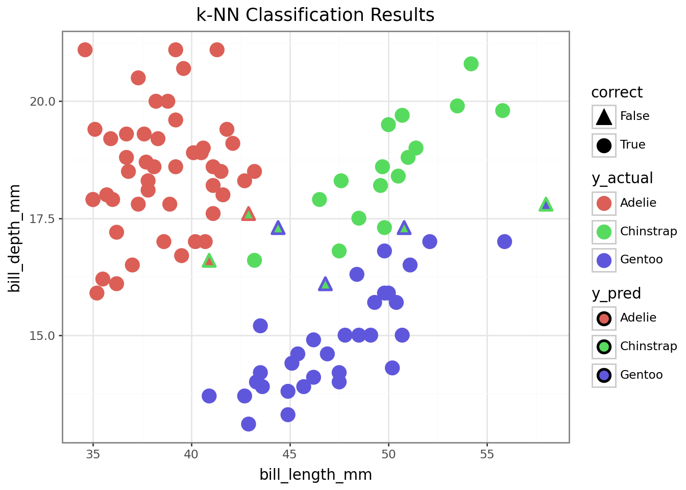
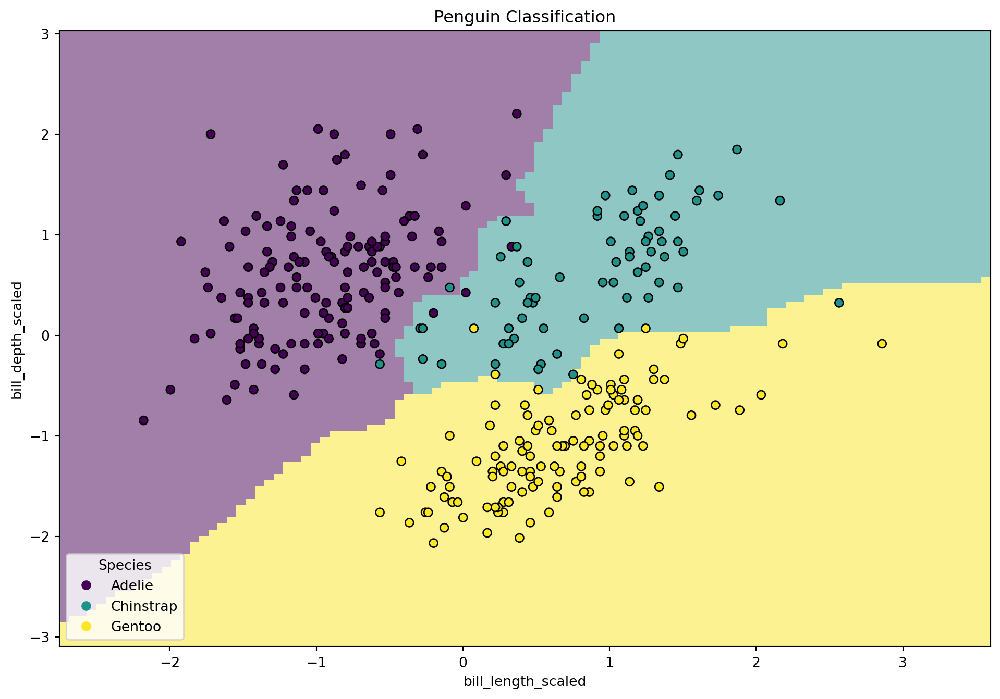

Session 4 – Object-Oriented Programming and Modeling Libraries
Pre-Reading for This Session
- KNN vs K-means
- ‘Parts of a Figure’ and ‘Coding Styles’ sections of Quick Start Guide (Matplotlib) ### Optional:
- Scikit-learn Documentation
- Introduction to OOP in Python (Real Python)
- Plotnine Reference
- Seaborn Reference
Note: The tutorial below is the same information we’ll be covering in session 4!
Session Overview
In this session, we’ll explore how Python’s object-oriented nature affects our modeling workflows.
- Intro to OOP and how it makes modeling in Python different from R
- Building and extending classes using inheritance and mixins
- Applying OOP to machine learning through demos with scikit-learn
- Creating and using models
-
Plotting data with
plotnineandseaborn
Introduction
Why Python? 🐍
R: Built by Statisticians for Statisticians
- Excels at:
- Statistical analysis and modeling
- Clean outputs and tables from models
- Beautiful data visualizations with simple code
- Statistical analysis and modeling
Python: General-Purpose Language
- Excels at:
- Machine Learning, Neural Networks & Deep Learning (scikit-learn, PyTorch, TensorFlow)
- Image & Genomic Data Analysis (scikit-image, biopython, scanpy)
- Software & Command Line Interfaces, Web Scraping, Automation
- Machine Learning, Neural Networks & Deep Learning (scikit-learn, PyTorch, TensorFlow)
Python’s broader ecosystem makes it the go-to language in domains like AI, bioinformatics, data engineering, and computational biology.
Note: Packages like
rpy2andreticulatemake it possible to use both R and Python in the same project, but those are beyond the scope of this course.
A primer onreticulateis available here: https://www.r-bloggers.com/2022/04/getting-started-with-python-using-r-and-reticulate/
Programming Styles: R vs Python
In the first session, we talked briefly about functional vs object-oriented programming:
Functional programming: focuses on functions as the primary unit of code
Object-oriented programming: uses objects with attached attributes(data) and methods(behaviors)
R leans heavily on the functional paradigm — you pass data into functions and get back results, in most cases without altering the original data. Functions and pipes (%>%) dominate most workflows.
In Python, everything is an object, even basic things like lists, strings, and dataframes. A lot of ‘functions’ are instead written as object-associated methods. Some of these methods modify the objects in-place by altering their attributes. Understanding how this works is key to using Python effectively!
You’ve already seen this object-oriented style in Sessions 2 and 3 — you create objects like lists or dataframes, then call methods on them like
.append()or.sort_values(). In python, instead of piping, we sometimes chain methods together.
Modeling in Python
Python absolutely uses functions—just like R! They’re helpful for data transformation, wrangling, and automation tasks like looping and parallelization.
But when it comes to modeling, libraries are designed around classes: blueprints for creating objects that store data (attributes) and define behaviors (methods).
scikit-learnis great for getting started—everything follows a simple, consistent OOP interface. Its API is also consistant with other modeling packages, like xgboost and scvi-tools.scikit-survivalis built on top ofscikit-learn. https://scikit-survival.readthedocs.io/en/stable/user_guide/00-introduction.html is a good tutorial for it.PyTorchandTensorFloware essential if you go deeper into neural networks or custom models—you’ll define your own model classes with attributes and methods, but the basic structure is similar toscikit-learn.
statsmodelsis an alternative toscikit-learnfor statistical analyses and has R-like syntax and outputs. It’s a bit more complex thanscikit-learnand a bit less consistant with other packages in the python ecosystem. https://wesmckinney.com/book/modeling is a good tutorial for statsmodels.
💡 To work effectively in Python, especially for tasks involving modeling or model training, it helps to think in terms of objects and classes, not just functions.
Why Does OOP Matter in Python Modeling?
In Python modeling frameworks:- Models are instances of classes
-
You call methods like
.fit(),.predict(),.score() - Internal model details like coefficients or layers are stored as attributes
This makes model behavior consistent between model classes and even libraries. It also simplifies creating/using pre-trained models: both the architecture and learned weights are bundled into a single object with expected built-in methods like .predict() or .fine_tune().
Instead of having a separate results object, like in R, you would retrieve your results by accessing an attribute or using a method that is attached to the model object itself.
We’ll focus on scikit-learn in this session, but these ideas carry over to other libraries like xgboost, statsmodels, and PyTorch.
Part 1: Object-Oriented Programming
Key OOP Principles (Recap)
In OOP, code is structured around objects (as opposed to functions). This paradigm builds off the following principles:
- Encapsulation: Bundling data and methods together in a single unit.
- A
StandardScalerobject stores mean and variance data and has.fit()and.transform()methods
- A
- Inheritance: Creating new classes based on existing ones.
sklearn.LinearRegressioninherits attributes and methods from a general regression model class.
- Abstraction: Hiding implementation details and exposing only essential functionality.
- e.g.,
.fit()works the same way from the outside, regardless of model complexity
- e.g.,
- Polymorphism: Objects of different types can be treated the same way if they implement the same methods.
- Python’s duck typing:
- 🦆 “If it walks like a duck and quacks like a duck, then it must be a duck.” 🦆
- ex: If different objects all have a .summarize() method, we can loop over them and call .summarize() without needing to check their class. As long as the method exists, Python will know what to do.
- This lets us easily create pipelines that can work for many types of models.
- 🦆 “If it walks like a duck and quacks like a duck, then it must be a duck.” 🦆
- Python’s duck typing:
We won’t cover pipelines here, but they are worth looking into!
Classes and Objects
Classes are blueprints for creating objects. Each object contains:- Attributes (data): model coefficients, class labels
-
Methods (behaviors):
.fit(),.predict()
👉 To Get the class of an object, use:
👉 To check if an object is an instance of a particular class, use:
Knowing what class an object belongs to helps us understand what methods and attributes it provides.
Example: Creating a Class
Base Classes
A base class (or parent class) serves as a template for creating objects. Other classes can inherit from it to reuse its properties and methods.
Classes are defined using the class keyword, and their structure is specified using an __init__() method for initialization.
For example, we can define a class called Dog and give it attributes that store data about a given dog and methods that represent behaviors an object of the Dog class can perform. We can also edit the special or “dunder” methods (short for double underscore) that define how objects behave in certain contexts.
class Dog: ## begin class definition
def __init__(self, name, breed): ## define init method
self.name = name ## add attributes
self.breed = breed
def speak(self): ## add methods
return f"{self.name} says woof!"
def __str__(self): # __str__(self) tells python what to display when an object is printed
return f"Our dog {self.name}"
def __repr__(self): # add representation to display when dog is called in console
return f"Dog(name={self.name!r}, breed={self.breed!r})"Creating a dog
Creating an instance of the Dog class lets us model a particular dog:
Buddy is an object of class <class '__main__.Dog'>-
We set the value of the attributes [
nameandbreed], which are then stored as part of thebuddyobject -
We can use any methods defined in the Dog class on
buddy
Our dog Buddy is a Golden Retriever.
Buddy says woof!Dog(name='Buddy', breed='Golden Retriever')Note: For python methods, the self argument is assumed to be passed and therefore we do not put anything in the parentheses when calling .speak(). For attributes, we do not put () at all.
Derived (Child) Classes
Derived/child classes build on base classes using the principle of inheritence.
Now that we have a Dog class, we can build on it to create a specialized GuardDog class.
class GuardDog(Dog): # GuardDog inherits from Dog
def __init__(self, name, breed, training_level): ## in addition to name and breed, we can
# define a training level.
# Call the parent (Dog) class's __init__ method
super().__init__(name, breed)
self.training_level = training_level # New attribute for GuardDog that stores the
# training level for the dog
def guard(self): ## checks if the training level is > 5 and if not says train more
if self.training_level > 5:
return f"{self.name} is guarding the house!"
else:
return f"{self.name} needs more training before guarding."
def train(self): # modifies the training_level attribute to increase the dog's training level
self.training_level = self.training_level + 1
return f"Training {self.name}. {self.name}'s training level is now {self.training_level}"
# Creating an instance of GuardDog
rex = GuardDog("Rex", "German Shepherd", training_level= 5)Now that we have a dog (rex), we can call on any of the methods/attributes introduced in the Dog class as well as the new GuardDog class.
Using methods from the base class:
Using a method from the child class:
Rex's training level is 5.
Rex needs more training before guarding.. . .
This is the power of inheritance—we don’t have to rewrite everything from scratch!
Unlike standalone functions, methods in Python often update objects in-place—meaning they modify the object itself rather than returning a new one.
We can use the .train() method to increase rex’s training level.
. . .
Now if we check,
Rex's training level is 6.
Rex is guarding the house!. . .
As with Rex, child classes inherit all attributes (.name and .breed) and methods (.speak() __repr__()) from parent classes. They can also have new methods (.train()).
Mixins
A mixin is a special kind of class designed to add functionality to another class. Unlike base classes, mixins aren’t used alone.
For example, scikit-learn uses mixins like:
- sklearn.base.ClassifierMixin (adds classifier-specific methods)
- sklearn.base.RegressorMixin (adds regression-specific methods)
which it adds to the BaseEstimator class to add functionality.
To finish up our dog example, we are going to define a mixin class that adds learning tricks to the base Dog class and use it to create a new class called SmartDog.
When creating a mixin class, we let the other base classes carry most of the initialization
class TrickMixin: ## mixin that will let us teach a dog tricks
def __init__(self, *args, **kwargs):
super().__init__(*args, **kwargs) # Ensures proper initialization in multi inheritance
self.tricks = [] # Add attribute to store tricks
## add trick methods
def learn_trick(self, trick):
"""Teaches the dog a new trick."""
if trick not in self.tricks:
self.tricks.append(trick)
return f"{self.name} learned a new trick: {trick}!"
return f"{self.name} already knows {trick}!"
def perform_tricks(self):
"""Returns a list of tricks the dog knows."""
if self.tricks:
return f"{self.name} can perform: {', '.join(self.tricks)}."
return f"{self.name} hasn't learned any tricks yet."
## note: the TrickMixin class is not a standalone class!By including both Dog and TrickMixin as base classes, we give objects of class SmartDog the ability to speak and learn tricks!
class SmartDog(Dog, TrickMixin):
def __init__(self, name, breed):
super().__init__(name, breed) # Initialize Dog class
TrickMixin.__init__(self) # Initialize TrickMixin separately
# a SmartDog object can use methods from both parent object `Dog` and mixin `TrickMixin`.
my_smart_dog = SmartDog("Buddy", "Border Collie")
print(my_smart_dog.speak()) Buddy says woof!Buddy learned a new trick: Sit!
Buddy learned a new trick: Roll Over!
Buddy already knows Sit!Duck Typing
Python’s duck typing makes our lives a lot easier, and is one of the main benefits of methods over functions:🦆 “If it quacks like a duck and walks like a duck, it’s a duck.” 🦆
- Repurposing old code - methods by the same name work the same for different model types
- Not necessary to check types before using methods - methods are assumed to work on the object they’re attached to
We can demonstrate this by defining two new base classes that are different than Dog but also have a speak() method.
. . .
Duck Typing in Action
Even though Dog, Human and Parrot are entirely different classes…
Fido says woof!
Alice says hello!
Polly says squawk!. . .
They all implement .speak(), so Python treats them the same!
In the context of our work, this would allow us to make a pipeline using models from different libraries that have the same methods.
While our dog example was very simple, this is the same way that model classes work in python!
Example: OOP in Machine Learning and Modeling
Machine learning models in Python are implemented as classes.-
When you create a model, you’re instantiating an object of a predefined class (e.g.,
LogisticRegression()). -
That model has attributes (parameters, coefficients) and methods (like
.fit()and.predict()).
For example LogisticRegression is a model class that inherits from SparseCoefMixin and BaseEstimator.
To perform logistic regression, we create an instance of the LogisticRegression class.
## Example:
from sklearn.linear_model import LogisticRegression
model = LogisticRegression() # Creating an instance of the LogisticRegression class
model.fit(X_train, y_train) # Calling a method to train the model
predictions = model.predict(X_test) # Calling a method to make predictions
coefs = model.coef_ # Access model coefficients using attributeKey Benefits of OOP in Machine Learning
- Encapsulation – Models store parameters and methods inside a single object.
- Inheritance – New models can build on base models, reusing existing functionality.
- Abstraction –
.fit()should work as expected, regardless of complexity of underlying implimentation. - Polymorphism (Duck Typing) – Different models share the same method names (
.fit(),.predict()), making them easy to use interchangeably, particularly in analysis pipelines.
Understanding base classes and mixins is especially important when working with deep learning frameworks like PyTorch and TensorFlow, which require us to create our own model classes.
Part B - Demo Projects
Apply knowledge of OOP to modeling using scikit-learn
🐧 Mini Project: Classifying Penguins with scikit-learn
Now that you understand classes and data structures in Python, let’s apply that knowledge to classify penguin species using two features:-
bill_length_mm -
bill_depth_mm
We’ll explore:
- Unsupervised learning with K-Means clustering (model doesn’t ‘know’ y)
- Supervised learning with a k-NN classifier (model trained w/ y information)
All scikit-learn models are designed to have
-
.fit()— Train the model -
.predict()— Make predictions
-
.classes_,.n_clusters_, etc.
This is true of the scikit-survival package too!
Import Libraries
Before any analysis, we must import the necessary libraries.
For large libraries like scikit-learn, PyTorch, or TensorFlow, we usually do not import the entire package. Instead, we selectively import the classes and functions we need.
Classes
- StandardScaler — for feature scaling
- KNeighborsClassifier — for supervised k-NN classification
- KMeans — for unsupervised clustering
🔤 Naming Tip:
-CamelCase= Classes
-snake_case= Functions
Functions
- train_test_split() — to split data into training and test sets
- accuracy_score() — to evaluate classification accuracy
- classification_report() — to print precision, recall, F1 (balance of precision and recall), Support (number of true instances per class) - adjusted_rand_score() — to evaluate clustering performance
Import Libraries
## imports
import pandas as pd
import numpy as np
from plotnine import *
import seaborn as sns
import matplotlib.pyplot as plt
from great_tables import GT
## sklearn imports
## import classes
from sklearn.preprocessing import StandardScaler
from sklearn.neighbors import KNeighborsClassifier
from sklearn.cluster import KMeans
## import functions
from sklearn.model_selection import train_test_split
from sklearn.metrics import accuracy_score, classification_report, adjusted_rand_scoreData Preparation
# Load the Penguins dataset
penguins = sns.load_dataset("penguins").dropna()
# Make a summary table for the penguins dataset, grouping by species.
summary_table = penguins.groupby("species").agg({
"bill_length_mm": ["mean", "std", "min", "max"],
"bill_depth_mm": ["mean", "std", "min", "max"],
"sex": lambda x: x.value_counts().to_dict() # Count of males and females
})
# Round numeric values to 1 decimal place (excluding the 'sex' column)
for col in summary_table.columns:
if summary_table[col].dtype in [float, int]:
summary_table[col] = summary_table[col].round(1)
# Display the result
display(summary_table)| bill_length_mm | bill_depth_mm | sex | |||||||
|---|---|---|---|---|---|---|---|---|---|
| mean | std | min | max | mean | std | min | max | <lambda> | |
| species | |||||||||
| Adelie | 38.8 | 2.7 | 32.1 | 46.0 | 18.3 | 1.2 | 15.5 | 21.5 | {'Male': 73, 'Female': 73} |
| Chinstrap | 48.8 | 3.3 | 40.9 | 58.0 | 18.4 | 1.1 | 16.4 | 20.8 | {'Female': 34, 'Male': 34} |
| Gentoo | 47.6 | 3.1 | 40.9 | 59.6 | 15.0 | 1.0 | 13.1 | 17.3 | {'Male': 61, 'Female': 58} |
Data Visualization
To do visualization, we can use either seaborn or plotnine. plotnine mirrors ggplot2 syntax from R and is great for layered grammar-of-graphics plots, while seaborn seaborn is more convienient if you want to put multiple plots on the same figure.
Plotting with Plotnine vs Seaborn
The biggest differences between
plotnine and ggplot2 syntax are:
-
With
plotninethe whole call is wrapped in()parentheses -
Variables are called with strings (
""are needed!) -
If you don’t use
from plotnine import *, you will need to import each individual function you plan to use!
- Designed for quick, polished plots
- Works well with pandas DataFrames or NumPy arrays
-
Integrates with
matplotlibfor customization - Good for things like decision boundaries or heatmaps
- Harder to customize than plotnine plots
Scatterplot with plotnine
To take a look at the distribution of our species by bill length and bill depth before clustering…
Scatterplot with seaborn
We can make a similar plot in seaborn. This time, let’s include sex by setting the point style
# Create the figure and axes obects
fig, ax = plt.subplots(figsize=(10, 8))
# Create a plot
sns.scatterplot(
data=penguins, x="bill_length_mm", y="bill_depth_mm",
hue="species", ## hue = fill
style="sex", ## style = style of dots
palette="Set2", ## sets color pallet
edgecolor="black", s=300, ## line color and point size
ax=ax ## Draw plot on ax
)
# Use methods on ax to set title, labels
ax.set_title("Penguin Bill Length vs Depth by Species")
ax.set_xlabel("Bill Length (mm)")
ax.set_ylabel("Bill Depth (mm)")
ax.legend(title="Species")
# Plot the figure
fig.tight_layout()
#fig.show() -> if not in interactive
Scaling the data - Understanding the Standard Scaler class
For our clustering to work well, the predictors should be on the same scale. To achieve this, we use an instance of the StandardScaler class.
. . .
Parameters are supplied by user
- copy, with_mean, with_std
Attributes contain the data of the object
- scale_: scaling factor
- mean_: mean value for each feature
- var_: variance for each feature
- n_features_in_: number of features seen during fit
- n_samples_seen: number of samples processed for each feature
Methods describe the behaviors of the object and/or modify its attributes
- fit(X): computes mean and std used for scaling and ‘fits’ scaler to data X
- transform(X): performs standardization by centering and scaling X with fitted scaler
- fit_transform(X): does both
Scaling Data
# Selecting features for clustering -> let's just use bill length and bill depth.
X = penguins[["bill_length_mm", "bill_depth_mm"]]
y = penguins["species"]
# Standardizing the features for better clustering performance
scaler = StandardScaler() ## create instance of StandardScaler
X_scaled = scaler.fit_transform(X) | Original vs Scaled Features | ||||
| Feature | Original | Scaled | ||
|---|---|---|---|---|
| Bill Length | Bill Depth | Bill Length | Bill Depth | |
| mean | 44 | 17 | 0 | 0 |
| std | 5 | 2 | 1 | 1 |
Show table code
## Make X_scaled a pandas df
X_scaled_df = pd.DataFrame(X_scaled, columns=X.columns)
# Compute summary statistics and round to 2 sig figs
original_stats = X.agg(["mean", "std"])
scaled_stats = X_scaled_df.agg(["mean", "std"])
# Combine into a single table with renamed columns
summary_table = pd.concat([original_stats, scaled_stats], axis=1)
summary_table.columns = ["Bill_Length_o", "Bill_Depth_o", "Bill_Length_s", "Bill_Depth_s"]
summary_table.index.name = "Feature"
# Display nicely with great_tables
(
GT(summary_table.reset_index()).tab_header("Original vs Scaled Features")
.fmt_number(columns = ["Bill_Length_o", "Bill_Depth_o", "Bill_Length_s", "Bill_Depth_s"], decimals=0)
.tab_spanner(label="Original", columns=["Bill_Length_o", "Bill_Depth_o"])
.tab_spanner(label="Scaled", columns=["Bill_Length_s", "Bill_Depth_s"])
.cols_label(Bill_Length_o = "Bill Length", Bill_Depth_o = "Bill Depth", Bill_Length_s = "Bill Length", Bill_Depth_s = "Bill Depth")
.tab_options(table_font_size = 16)
)Understanding the KMeans model class
Parameters: Set by user at time of instantiation
- n_clusters, max_iter, algorithm
Attributes: Store object data
- cluster_centers_: stores coordinates of cluster centers
- labels_: stores labels of each point - n_iter_: number of iterations run (will be changed during method run)
- n_features_in and feature_names_in_: store info about features seen during fit
Methods: Define object behaviors
- fit(X): fits model to data X - predict(X): predicts closest cluster each sample in X belongs to
- transform(X): transforms X to cluster-distance space
Create model
KMeans(n_clusters=3, random_state=42)In a Jupyter environment, please rerun this cell to show the HTML representation or trust the notebook.
On GitHub, the HTML representation is unable to render, please try loading this page with nbviewer.org.
KMeans(n_clusters=3, random_state=42)
Fit model to data
Coordinates of cluster centers: [[-0.95023997 0.55393493]
[ 0.58644397 -1.09805504]
[ 1.0886843 0.79503579]]KMeans(n_clusters=3, random_state=42)In a Jupyter environment, please rerun this cell to show the HTML representation or trust the notebook.
On GitHub, the HTML representation is unable to render, please try loading this page with nbviewer.org.
KMeans(n_clusters=3, random_state=42)
Use function to calculate ARI
To check how good our model is, we can use one of the functions included in the sklearn library.
The adjusted_rand_score() function evaluates how well the cluster groupings agree with the species groupings while adjusting for chance.
k-Means Adjusted Rand Index: 0.82We can also use methods on our data structure to create new data
- We can use the
.groupby()method to help us plot cluster agreement with species label as a heatmap - If we want to add sex as a variable to see if that is why our clusters don’t agree with our species, we can use a scatterplot
- Using seaborn and matplotlib, we can easily put both of these plots on the same figure.
# Count occurrences of each species-cluster-sex combination
# (.size gives the count as index, use reset_index to get count column.)
scatter_data = (penguins.groupby(["species", "kmeans_cluster", "sex"])
.size()
.reset_index(name="count"))
species_order = list(scatter_data['species'].unique()) ## defining this for later
# Create a mapping to add horizontal jitter for each sex for scatterplot
sex_jitter = {'Male': -0.1, 'Female': 0.1}
scatter_data['x_jittered'] = scatter_data.apply(
lambda row: scatter_data['species'].unique().tolist().index(row['species']) +
sex_jitter.get(row['sex'], 0),
axis=1
)
heatmap_data = scatter_data.pivot_table(index="kmeans_cluster", columns="species",
values="count", aggfunc="sum", fill_value=0)Creating Plots
# Prepare the figure with 2 subplots; the axes object will contain both plots
fig2, axes = plt.subplots(1, 2, figsize=(16, 7)) ## 1 row 2 columns
# Plot heatmap on the first axis
sns.heatmap(data = heatmap_data, cmap="Blues", linewidths=0.5, linecolor='white', annot=True,
fmt='d', ax=axes[0])
axes[0].set_title("Heatmap of KMeans Clustering by Species")
axes[0].set_xlabel("Species")
axes[0].set_ylabel("KMeans Cluster")
# Scatterplot with jitter
sns.scatterplot(data=scatter_data, x="x_jittered", y="kmeans_cluster",
hue="species", style="sex", size="count", sizes=(100, 500),
alpha=0.8, ax=axes[1], legend="brief")
axes[1].set_xticks(range(len(species_order)))
axes[1].set_xticklabels(species_order)
axes[1].set_title("Cluster Assignment by Species and Sex (Jittered)")
axes[1].set_ylabel("KMeans Cluster")
axes[1].set_xlabel("Species")
axes[1].set_yticks([0, 1, 2])
axes[1].legend(bbox_to_anchor=(1.05, 0.5), loc='center left', borderaxespad=0.0, title="Legend")
fig2.tight_layout()
#fig2.show()
Project 2: KNN classification
For our KNN classification, the model is supervised (meaning it is dependent on the outcome ‘y’ data). This time, we need to split our data into a training and test set.
. . .
The function train_test_split() from scikit-learn is helpful here!
. . .
Unlike R functions, which return a single object (often a list when multiple outputs are needed), Python functions can return multiple values as a tuple—letting you unpack them directly into separate variables.
Understanding KNeighborsClassifier class
. . .
Parameters: Set by user at time of instantiation
- n_neigbors, weights, algorithm, etc.
Attributes: Store object data
- classes_: class labels known to the classifier
- effective_metric_: distance metric used
- effective_metric_params_: parameters for the metric function
- n_features_in and feature_names_in_: store info about features seen during fit
- n_samples_fit_: number of samples in fitted data
Methods: Define object behaviors
- .fit(X, y): fit knn classifier from training dataset (X and y)
- .predict(X): predict class labels for provided data X
- .predict_proba(X): return probability estimates for test data X
- .score(X, y): return mean accuracy on given test data X and labels y
Making an instance of KNeighborsClassifier and fitting to training data
- For a supervised model, y_train is included in
.fit()!
## perform knn classification
# Applying k-NN classification with 5 neighbors
knn = KNeighborsClassifier(n_neighbors=5) ## make an instance of the KNeighborsClassifier class
# and set the n_neighbors parameter to be 5.
# Use the fit method to fit the model to the training data
knn.fit(X_train, y_train)
knnOnce the model is fit…
-We can look at its attributes (ex: .classes_) which gives the class labels as known to the classifier
. . .
-And use fitted model to predict species for test data
# Use the predict method on the test data to get the predictions for the test data
y_pred = knn.predict(X_test)
# Also can take a look at the prediction probabilities,
# and use the .classes_ attribute to put the column labels in the right order
probs = pd.DataFrame(
knn.predict_proba(X_test),
columns = knn.classes_)
probs['y_pred'] = y_pred
print("Predicted probabilities: \n", probs.head())Predicted probabilities:
Adelie Chinstrap Gentoo y_pred
0 1.0 0.0 0.0 Adelie
1 0.0 0.0 1.0 Gentoo
2 1.0 0.0 0.0 Adelie
3 0.0 0.6 0.4 Chinstrap
4 1.0 0.0 0.0 AdelieScatterplot for k-NN classification of test data
- Create dataframe of unscaled X_test,
bill_length_mm, andbill_depth_mm. - Add to it the actual and predicted species labels
## First unscale the test data
X_test_unscaled = scaler.inverse_transform(X_test)
## create dataframe
penguins_test = pd.DataFrame(
X_test_unscaled,
columns=['bill_length_mm', 'bill_depth_mm']
)
## add actual and predicted species
penguins_test['y_actual'] = y_test.values
penguins_test['y_pred'] = y_pred
penguins_test['correct'] = penguins_test['y_actual'] == penguins_test['y_pred']
print("Results: \n", penguins_test.head())Results:
bill_length_mm bill_depth_mm y_actual y_pred correct
0 39.5 16.7 Adelie Adelie True
1 46.9 14.6 Gentoo Gentoo True
2 42.1 19.1 Adelie Adelie True
3 49.8 17.3 Chinstrap Chinstrap True
4 41.1 18.2 Adelie Adelie TruePlotnine scatterplot for k-NN classification of test data
To see how well our model did at classifying the remaining penguins…
## Build the plot
plot3 = (ggplot(penguins_test, aes(x="bill_length_mm", y="bill_depth_mm",
color="y_actual", fill = 'y_pred', shape = 'correct'))
+ geom_point(size=4, stroke=1.1) # Stroke controls outline thickness
+ scale_shape_manual(values={True: 'o', False: '^'}) # Circle and triangle
+ ggtitle("k-NN Classification Results")
+ theme_bw())
display(plot3)
Visualizing Decision Boundary with seaborn and matplotlib
from sklearn.inspection import DecisionBoundaryDisplay
from sklearn.preprocessing import LabelEncoder
# Create and fit label encoder for y (just makes y numeric because it makes the scatter plot happy)
label_encoder = LabelEncoder()
y_encoded = label_encoder.fit_transform(y)
# Create the plot objects
fig, ax = plt.subplots(figsize=(12, 8))
# Create display object
disp = DecisionBoundaryDisplay.from_estimator(
knn,
X_test,
response_method = 'predict',
plot_method = 'pcolormesh',
xlabel = "bill_length_scaled",
ylabel = "bill_depth_scaled",
shading = 'auto',
alpha = 0.5,
ax = ax
)
# Use method from display object to create scatter plot
scatter = disp.ax_.scatter(X_scaled[:,0], X_scaled[:,1], c=y_encoded, edgecolors = 'k')
disp.ax_.legend(scatter.legend_elements()[0], knn.classes_, loc = 'lower left', title = 'Species')
_ = disp.ax_.set_title("Penguin Classification")
fig.show()
Evaluate KNN performance
To check the performance of our KNN classifier, we can check the accuracy score and print a classification report.
- accuracy_score and classification_report are both functions!
- They are not unique to scikit-learn classes so it makes sense for them to be functions not methods
k-NN Accuracy: 0.94
Classification Report:
precision recall f1-score support
Adelie 0.98 0.98 0.98 48
Chinstrap 0.80 0.89 0.84 18
Gentoo 0.97 0.91 0.94 34
accuracy 0.94 100
macro avg 0.92 0.93 0.92 100
weighted avg 0.94 0.94 0.94 100
Make a Summary Table of Metrics for Both Models
| Model Results Summary | |
| Metric | Value |
|---|---|
| k-Means Adjusted Rand Index | 0.82 |
| k-NN Accuracy | 0.94 |
Key Takeaways from This Session
-
Python workflows rely on object-oriented structures in addition to functions:
Understanding the OOP paradigm makes Python a lot easier! - Everything is an object!
-
Duck Typing:
If an object has a method, that method can be called regardless of the object type. Caveat being, make sure the arguments (if any) in the method are specified correctly for all objects! - Python packages use common methods that make it easy to change between model types without changing a lot of code.
Additional Insights
-
Predictable APIs enable seamless model switching:
Swapping models likeLogisticRegression→RandomForestClassifierusually requires minimal code changes. -
scikit-learn prioritizes interoperability:
Its consistent class design integrates with tools likePipeline,GridSearchCV, andcross_val_score. -
Class attributes improve model transparency:
Access attributes like.coef_,.classes_, and.feature_importances_for model interpretation and debugging. -
Custom classes are central to deep learning:
Frameworks like PyTorch and TensorFlow require you to define your own model classes by subclassing base models. -
Mixins support modular design:
Mixins (e.g.,ClassifierMixin) let you add specific functionality without duplicating code.